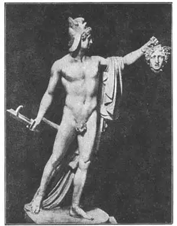
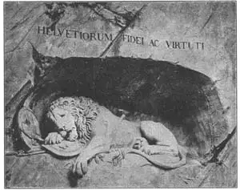

50
AN ITALIAN AND A DANE
一个意大利人和一个丹麦人

THE best Italian sculptor since the time of Michelangelo was named Antonio Canova. We generally call him simply Canova. He lived from 1757 to 1822.
Canova was brought up by his grandparents and as his grandfather was a stone cutter, the boy had from the beginning a chance to be a sculptor. When he was only eight years old he carved in marble two small shrines. When he was about ten, he is said to have carved a lion out of butter for the banquet of a rich nobleman, who liked it so much he became Canova’s patron, or backer.
Canova studied hard to become a sculptor and by the time be was a man he was doing a great many good statues. These brought him much fame and much money. The money he spent by giving it away to poor people, founding art schools, helping sculptors, and giving prizes for good sculpture.
Canova’s statues are very smooth and pretty, but not very strong in appearance. He carved a great many of the ancient gods and goddesses and seemed to imitate the old Greek and Roman art. He also carved portrait busts of famous men, including George Washington.
Canova’s Perseus with the head of Medusa reminds you of another Perseus. Canova’s Perseus isn’t so good as Cellini’s, but probably it is just as famous.
When Canova was at the height of his fame there came to Italy in 1797 a young man from Denmark. He liked Italy so much he stayed there for twenty-three years and soon became famous as a sculptor. Perhaps you have seen pictures of the dying lion he carved in solid rock—the famous Lion of Lucerne. It was made by a Danish sculptor in Italy in honor of the Swiss guards who died in France rather than surrender. That certainly makes a mixture of countries in one sentence.
Who was this Dane? His name was Thorvaldsen. He knew Canova and, like Canova, imitated the style of the statues of ancient Greece and Rome. He was the most successful of the imitators. Some of his works, like the Lion of Lucerne, were not in ancient style.
When Thorvaldsen returned from a visit to Denmark after twenty-three years abroad, he had become so famous that he was asked to make a colossal statue of Christ and twelve colossal statues of the Apostles for a church in Copenhagen. Colossal, you remember means tremendously large. (Think of the Colossus of Rhodes.) These huge statues were completed in Italy in twenty years and sent to Copenhagen. A copy of the Christ stands in the lobby of the Johns Hopkins Hospital in Baltimore.

No.50-1 PERSEUS（《帕尔修斯》） CANOVA（卡诺瓦 制）
When Thorvaldsen died, he left much of his fortune for the building of an art museum in Copenhagen. There most of his works are kept and in the courtyard the sculptor himself is buried.

No.50-2 THE LION OF LUCERNE（《卢塞恩狮子》） THORVALDSEN（托瓦森 制）
【中文阅读】
米开朗基罗时代之后，意大利最棒的雕刻家是安东尼奥·卡诺瓦。我们通常只叫他卡诺瓦。他1757年出生，1822年去世。
卡诺瓦是祖父母带大的。他爷爷是个石匠，所以他从小就有机会打好将来作雕刻家的基础。卡诺瓦8岁时用大理石刻了两个神龛。据说，他大概10岁时，在某公爵家的宴席上用一块黄油刻了一只狮子。公爵非常喜欢这枚狮子像，于是就做了卡诺瓦的赞助人。
卡诺瓦刻苦学习，想成为一名雕刻家。到成年时，他已经制作了许多优秀的雕像。这些雕像使他名利双收。他把钱分给穷人，创建艺术学校，资助其他雕刻家以及奖励好的雕刻作品。
卡诺瓦的雕像光滑精致，但外表不是很有力度。他雕刻了大量古代神像，有模仿古希腊罗马艺术之嫌。此外，他还为包括乔治·华盛顿在内的许多名人刻过半身像。
卡诺瓦刻的帕尔修斯举着美杜莎头颅的雕像使我们想起了切利尼的帕尔修斯像。卡诺瓦的帕尔修斯像刻得没有切利尼的好，但两者却同样出名。
1797年，正当卡诺瓦声名大噪时，一个年轻的丹麦人来到意大利。这年轻人非常喜欢意大利，一待就是二十三年，而且很快就成为著名的雕刻家。
我们或许见过闻名的《卢塞恩狮子》——也就是他用坚石刻的一头濒临死亡的狮子像。这就是那位来到意大利的丹麦雕刻家的作品——为了纪念在法国战场上宁死不屈而战死的瑞士士兵，当然这一个句子涵盖了许多国家。
这丹麦人是谁呢？他名叫托瓦森。他认识卡诺瓦，而且跟卡诺瓦一样也模仿古希腊罗马的雕刻风格。在众多模仿者中，托瓦森最为成功。他的一些作品，譬如像《卢塞恩狮子》，却又不呈现古代风格。
托瓦森旅居国外二十三年后回到丹麦。那时他已大名鼎鼎。他受邀为哥本哈根信义堂雕一尊巨型耶稣像和十二座巨型使徒像。还记得我介绍过巨像吧（可以回想罗得岛巨像)。托瓦森花了二十年时间将这些巨像雕刻好并送到哥本哈根。如今，耶稣像的一件摹制品竖立在巴尔的摩的约翰·霍普斯金医院的大厅里。
托瓦森去世时，用大部分遗产在哥本哈斯建立了一家艺术博物馆。他的主要作品都珍藏在这家博物馆。雕刻家自己就葬在博物馆的庭院里。